ActD Ajouter un note à une activité
UMLActivity
Untitled
::
Note
::
ActD Ajouter un note à une activité
Description
none
Diagrams

Ajouter un note à une activité
Groups
Utilisateur
SI
BDD
Edges
(InitialNode1→Id de la note)
(Id de la note→Demander les détails de la note)
(Demander les détails de la note→Envoyer les détails de la note)
(Envoyer les détails de la note→Afficher les détails de la note)
(Afficher les détails de la note→Définir la note sur une activité)
(Définir la note sur une activité→Envoyer l'ajout)
(Envoyer l'ajout→Enregister la modification)
(Enregister la modification→Afficher une message de accomplissement)
(Afficher une message de accomplissement→ActivityFinalNode1)
Properties
Name
Value
name
ActD Ajouter un note à une activité
stereotype
null
visibility
public
isReentrant
true
isReadOnly
false
isSingleExecution
false
Owned Elements
Ajouter un note à une activité